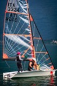
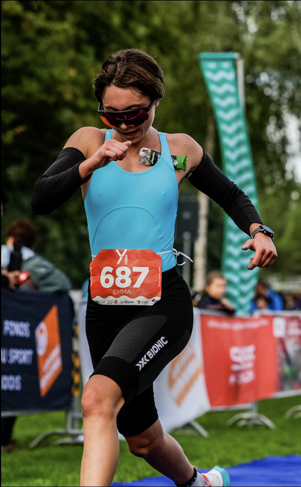

Hello!
Here is a picture of me sailing.

Molecular Biologist · Bioengineer · Quantum Chemistry enthusiast
I am a Molecular Life Sciences student at UNIL, currently finishing my MSc focusing on bioengineering and protein design. I come from Italy, where I completed the Maturità di Liceo Scientifico in 2021, before moving to the Netherlands to study at University College Venlo (UM), where I obtained a BSc (Cum Laude) in Liberal Arts and Life Sciences. I now live in Lausanne, finishing my MSc while working on a prototype for rare earth element recovery from electronic waste. Outside the lab, I love sailing, cycling, running, winter sports, and I am deeply curious about psychology, sociology, and classic literature.


When I was two, my father first took me sailing, passing on a family tradition that quickly became my own. Since joining the pre‑competition Optimist team in Bellano at six and racing from eight, sailing has been a constant thread in my life, shaping how I think about discipline, resilience, and ambition.
As a teenager I tried to “graduate” to the Laser, but my frame did not quite match the boat, so I stepped away from sailing for a couple of years and experimented with tennis, even competing a bit. In 2018, everything changed again when I joined a Hobie Cat 16 team in Dervio and became crew on the HC16, eventually racing on the Italian national team and at the 2019 European Championship in La Rochelle. Those Opti and Hobie years – early mornings, long trainings, wins, losses, and a fair amount of trauma and joy – were profoundly formative and taught me that success is earned only through hard, patient work.
Covid disrupted that rhythm. In 2020 my helmsman and I transitioned to the 29er and joined Yacht Club Como, spending the pandemic years training and racing whenever restrictions allowed. I was lucky to be able to go out on the water, but mentally it was still a low period, and my relationship with performance and pressure shifted. Around then I picked up running, eventually racing my first half marathon (the Venloop) in 2022, and I have not really stopped running since.
Academically, after Liceo I moved from my small‑town context to Venlo in the Netherlands to study at University College Venlo. Curious about how food, exercise, and other external factors modulate biomolecular processes, I gravitated toward nutrition science, molecular biology, and biochemistry, and sprinkled in social sciences to make sense of the systems we live in. The campus was tiny and not very intellectually stimulating, and I went through a burnout that came less from overwork than from lack of challenge.
During my final bachelor year I relocated to Maastricht for my thesis and more molecular biology courses, by which point I knew genes and biomolecular mechanisms were what fascinated me most. Maastricht was my first encounter with an actual university ecosystem and student life. I also started swimming and cycling, tentatively moving toward triathlon and discovering that my body and mind could handle more than I thought.
For my Master’s I chose Lausanne, joining the MLS program at UNIL to deepen my molecular biology and bioengineering skills. Moving there turned out to be one of my best decisions: the environment is intellectually demanding, creatively charged, and full of people who push themselves. I joined Lausanne Run Club as a pacer and committed to my first triathlon, which I raced in August 2025, and I re‑entered competitive sailing through the Swiss Sailing League on the J/70 circuit and the Women’s League, skippering and doing tactics for LUC Voile, the university team.
The real inflection point, though, was leading the UNIL iGEM team over the summer of 2025. Until then, a lab semester project had convinced me I was headed for academia; those months also exposed me to how insulated and self‑referential academic work can become when “interesting experiments” are detached from real‑world impact. iGEM flipped that script. Working with a small, driven team showed me how much is possible in a few months when focus, discipline, and shared purpose align, and it rekindled my belief that bioengineering can and should build tangible solutions.
Our project collected prizes and recognition, but what mattered most was glimpsing the impact it might have if we kept pushing. Together with Chloé and Julien from the team, I decided not to let that momentum evaporate. Today, the three of us are turning that project into a company, and they keep reminding me how essential diversity, complementary energy, and a balanced ecosystem are – in teams, in science, and in life.
This is, roughly, where my story stands for now: shaped by wind and water, by a few missteps and re‑routes, and by the conviction that science has meaning only when it moves beyond the lab and into the world.